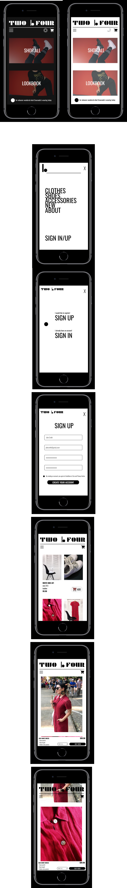

> 2019
> Year 1 assignment with the purpose of creating a fictional personal web shop with items from our own possession.
> From making the photographs to picking the grid, the decisions were completely ours to make. I started the concept from picking two photos I had made one year before that contained predominantly red and black, and thus I came up with the colour scheme.
> I decided on a name and a logo that stem from my personal life
> The main objectives were playing with filters, pagination, PDPs and AB testing.
